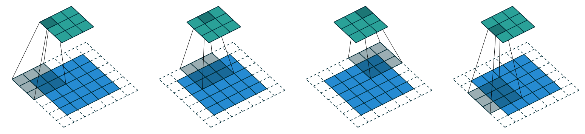
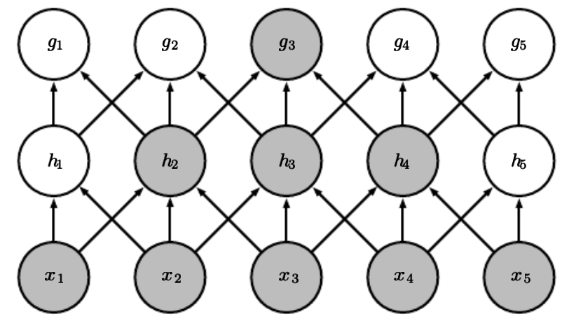

I was trying to create a MNIST classification model using CNNs and NNs in PyTorch and was surprised when I looked at the difference in number of parameters between similar performing CNN and a simple NN.
This Multi-layered neural network had an accuracy of around 97%.
model = nn.Sequential(nn.Linear(784,50), nn.ReLU(), nn.Linear(50,10))and it used around 39,700 parameters (weights) to do that.
This CNN also had an accuracy of around 97%.
def conv(ni, nf, ks=3, stride=2, act=True):
res = nn.Conv2d(ni, nf, stride=stride, kernel_size=ks, padding=ks//2)
if act: res = nn.Sequential(res, nn.ReLU())
return res
simple_cnn = nn.Sequential(
conv(1 ,4), #14x14
conv(4 ,8), #7x7
conv(8 ,16), #4x4
conv(16,16), #2x2
conv(16,10, act=False), #1x1
nn.Flatten(),
)and it only used around 5,274 parameters (weights) to do that.
What are the reasons behind this stark difference in number of parameters? This led me to an investigative journey which deepened my understanding of how CNNs work, but before understanding CNNs, I am expecting that you understand how Neural Networks work.
How Convolutions Work
A Convolution is like a sliding window over the data. It can be any data with a grid-like structure. It can be a time-series data which is a 1D grid or image data like in our case which can be viewed as a 2D grid.

Here we have a Kernel of 3x3 (black box), which is sliding over an image of size 5x5 with padding 1 and stride of 2 (sliding 2 pixels at a time) which creates an activation map of 3x3. This is how Convolutions happen in our CNN.
How CNNs Work
For a simple neural net, we matrix multiply the input with the Parameters (weights). This means that each and every input unit interacts with each and every weight exactly once for calculating the output of a layer, which makes a Traditional neural net different from a Convolutional Neural Network.
\[ W = \begin{bmatrix} w_1 & w_2 & w_3 \\ w_4 & w_5 & w_6 \\ w_7 & w_8 & w_9 \end{bmatrix} \]
\[ X = \begin{bmatrix} x_1 & x_2 & x_3 \\ x_4 & x_5 & x_6 \\ x_7 & x_8 & x_9 \end{bmatrix} \]
\[ X@W = \begin{bmatrix} (x_1 w_1 + x_2 w_4 + x_3 w_7) & (x_1 w_2 + x_2 w_5 + x_3 w_8) & (x_1 w_3 + x_2 w_6 + x_3 w_9) \\ (x_4 w_1 + x_5 w_4 + x_6 w_7) & (x_4 w_2 + x_5 w_5 + x_6 w_8) & (x_4 w_3 + x_5 w_6 + x_6 w_9) \\ (x_7 w_1 + x_8 w_4 + x_9 w_7) & (x_7 w_2 + x_8 w_5 + x_9 w_8) & (x_7 w_3 + x_8 w_6 + x_9 w_9) \end{bmatrix} \]
If we had to represent a 2x2 kernel sliding over a 3x3 input in a matrix form, it would look something like below, and it will create an activation map which is 4x4. If you look and compare the two operations, you can see that there are two main differences:
- Weights are Repeating
- Weight matrix for CNNs is filled with zeros
\[ W = \begin{bmatrix} k_1 & k_2 & 0 & k_3 & k_4 & 0 & 0 & 0 & 0 \\ 0 & k_1 & k_2 & 0 & k_3 & k_4 & 0 & 0 & 0 \\ 0 & 0 & 0 & k_1 & k_2 & 0 & k_3 & k_4 & 0 \\ 0 & 0 & 0 & 0 & k_1 & k_2 & 0 & k_3 & k_4 \end{bmatrix} \] \[ X= \begin{bmatrix} x_1 \\ x_2 \\ x_3 \\ x_4 \\ x_5 \\ x_6 \\ x_7 \\ x_8 \\ x_9 \end{bmatrix} \]
\[ X@W = \begin{bmatrix} k_1 x_1 + k_2 x_2 + k_3 x_4 + k_4 x_5 \\ k_1 x_2 + k_2 x_3 + k_3 x_5 + k_4 x_6 \\ k_1 x_4 + k_2 x_5 + k_3 x_7 + k_4 x_8 \\ k_1 x_5 + k_2 x_6 + k_3 x_8 + k_4 x_9 \end{bmatrix} \]
Let’s explore these differences further.
Repeating Weights (parameter sharing) - It is one of the reasons behind the efficiency of CNNs. In Dense matrix multiplication, input gets multiplied with a parameter exactly once to create an output, which is not the case in Convolutional Neural Networks. The kernel slides over the input, which means that each parameter of the kernel is used at every position in the input. Therefore, rather than learning different parameters for every position, we only learn one set of weights.
Weight Matrix filled with zeros (sparse representation) - The size of the kernel is smaller than the size of the input. Therefore, when we represent the convolutions in a matrix multiplication operation, it results in a matrix which is filled with zeros. One might think that because of all these zeros we might be losing some features of the input, especially in strided convolutions, which is not optimal. But if we look at the diagram below, you can see that is not the case. With X being our input, h being a shallow layer, and g being a deep layer, you can see that the deeper layer is connected to almost all of the image’s features.

Understanding the Code
So what does it mean when we are writing this code?
conv(1, 4)This function will receive a 28x28 image (ignoring batch_size) with one channel (since it’s black and white) and the output of this layer after using ReLU will be 4 different activation maps created by 4 different kernels. The size of the activation maps will be 14x14 (because of stride=2), and the same happens till the last layer which outputs the probability distribution for each digit from 0-9. We are not using ReLU in the last layer as we are using cross_entropy loss function which has its own softmax function and expects raw logits.
This layer has 1 input channel, 4 output channels, and a 3×3 kernel. Therefore, the total parameters of this layer will be:
1×4×3×3 = 36 parameters Confirming our calculations by fetching the parameters of the first layer:
conv1 = simple_cnn[0][0]
conv1.weightParameter containing:
tensor([[[[ 0.2922, 0.3600, 0.2967],
[-0.0044, 0.0414, -0.0608],
[ 0.1634, -0.0885, 0.2995]]],
[[[-0.2102, 0.3089, -0.1890],
[-0.1660, 0.1155, 0.3302],
[-0.0576, 0.0286, -0.2662]]],
[[[-0.3527, -0.0673, 0.2557],
[-0.1725, -0.3262, -0.3382],
[-0.1993, -0.3218, -0.5433]]],
[[[ 0.3354, 0.4143, 0.6307],
[ 0.8166, 1.2680, 0.7831],
[ 0.5499, 1.0570, 1.0479]]]], device='cuda:0', requires_grad=True)As you can see, the first layer has 36 parameters, just as we calculated. Each 3x3 matrix that you can see in the output is a kernel containing different parameters which will slide over our input image.
References
Fast.ai Course Howard, J. (n.d.). Lesson 15: Deep learning for coders. Fast.ai. Retrieved March 15, 2025, from https://course.fast.ai/Lessons/lesson15.html
Deep Learning Book Goodfellow, I., Bengio, Y., & Courville, A. (2016). Convolutional networks. In Deep learning (pp. 326-366). MIT Press. https://www.deeplearningbook.org/contents/convnets.html
Medium Article Basart, J. (2018, July 9). CNNs from different viewpoints. Medium - Impact AI. https://medium.com/impactai/cnns-from-different-viewpoints-fab7f52d159c